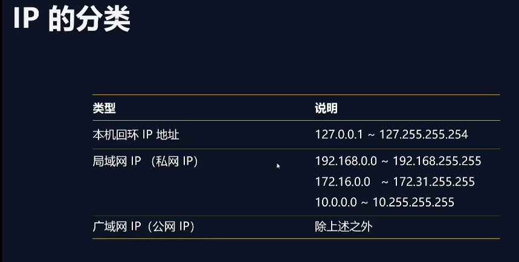

| IP的介绍 | IP本身是一个数字标识 作用： IP用来标志网络设备，实现设备间的通信 |
| IP的分类 | 分为:
作用： IP分类是为了解决ip地址只有40亿，不够用的问题 |
| 端口 | 端口是应用程序的数字标识 作用：为了实现不同主机应用程序之间的通信 一台现代计算机有65536个端口（0~65535）64kb个 一个应用程序可以使用一个或多个端口 举个例子，A在成都用电脑上的WeChat 给在杭州的B的电脑上的微信发了条信息 这个过程，电脑之间是通过广域网IP进行通信，通信的数据报文是 通过 微信的端口号来匹配交流的 此时IP举例 198.232.32.2:20=>122.222.34.1:12 |
| IP分类图 |  |